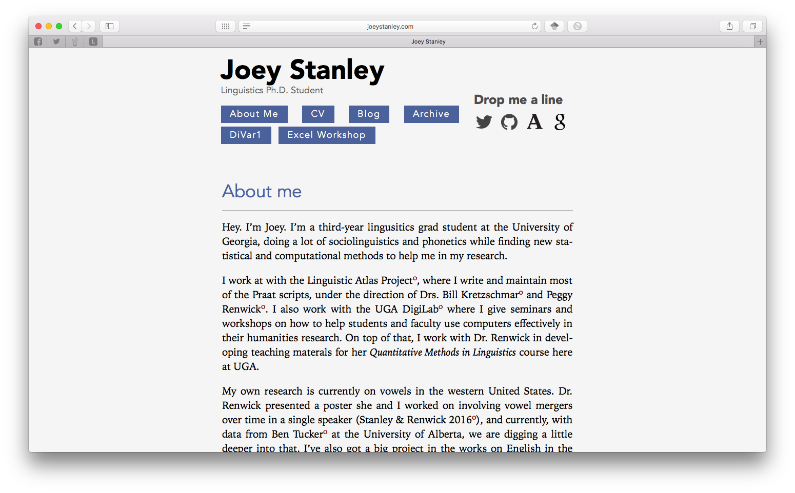

Today I finally rolled out a new version of my website! The previous version was great and was an excellent stepping stone into web design, but it was mostly borrowed code. Unsatisfied with some of the way it was designed, I decided to go ahead and just write a new site completely from scratch. It has taken about a month or so to get it going, but I think it’s a lot better than before.
New Site?
As I’ve mentioned previously, I went through a course on Lynda.com, called “Jekyll for Web Designers” that showed me the basics in how to get that website up. I was still in unfamiliar territory though as I navigated my way around CSS and HTML and any changes I wanted to make to the site were difficult to do. I liked the instructor for that course (James Willliamson) though, so when I looked up some of his other ones and saw that he did several others that would be relevant to me, I decided to go ahead an take them as well.
I first took his “CSS Core Concepts” where I learned all about CSS and how it works. At a whopping 9 hours long, I knew I was going to get a thorough treatment of CSS. Essentially I learned how to make things look the way I want on a webpage. I learned how to do anything I want to text like change the font, size, and color as well as add things like bold, italic, and small caps. I also learned how to add space around text or between elements on a webpage.
I learned about #Web on https://t.co/n13drggo1T. I completed CSS: Core Concepts by @jameswillweb https://t.co/at3VlMgyPD via @lynda
— Joey Stanley (@joey_stan) February 5, 2017
When I finished that, I continued on to the next course called “CSS Page Layouts” which I’m pretty close to finishing. This is more about web design and how to get from a sketch book drawing of a webpage to the screen. Most of the time was in CSS still (as opposed to the HTML) but I learned how to position things on the webpage.
The layout of site I had before was simply copied from the last tutorial in the first course. Since I didn’t write the HTML or the CSS, I didn’t know exactly what was going on, so if I wanted to make changes it was really hard to do. Now that I’ve written this new site from scratch, I know exactly what’s going on in all the webpages and in CSS.
Of course, the sacrifice is that this new site isn’t quite as clean as the old one was. For example, I know it looks good on my Apple laptop in Safari, but I don’t know all the code I need to watch out for to make it fully compatible with other browsers, let alone other versions of other browsers. The site also doesn’t adapt to smaller screens like phones and tablets. I’m still working on that.
So what’s the difference?
I didn’t do any major changes to the overall structure or the general typographic details that I use in everything I do. The fonts are still Iowan Old Style and Avenir and the background is still “whitesmoke” (96% white, 4% black). The blue from before was, coincidentally, very similar to the blue I use in my power point slides, but not exactly, so I went ahead and changed it to my blue to match my slides.
Just to give you an idea of what the site looked like before, here are some screenshots. This first one is my home page from my old site:

And this is my new home page:
A couple layout changes. First, I’ve widened it from something like 70% of the screen to a standard 960 pixels. That gave me the option of keeping my ideal width at roughly 66 characters still while giving me room for a sidebar.
I changed the header as well. I felt like it was the weakest part of my page, and I didn’t like how it looked. I knew I wanted my social media links to be somewhere prominent, and of course the navigation links should be there too. But I wanted to include temporary links to recent presentations so people can download the slideshow if they visit my site, and those didn’t quite fit up there. And I didn’t have anywhere to put a photo.
One solution was to have the top just include my name and the navigation buttons, which are now more descriptive. A sidebar could then have my photo, social media, and temporary links to recent presentations. There was also room to put an excerpt of my most recent blog post too, which I figured out how to do dynamically, which is pretty cool.
A new Research tab!
I also added a Research tab. I’ve seen this on lots of other people’s pages and I thought I’d include one in my own. I guess I figured everyone would clearly see what my research was by skimming through my CV, but putting it in prose like that makes a lot more sense.
The layout was a blatant copy from the UGA DigiLab projects tab. I think adding images, even if they’re simple like mine, contribute a lot to the page.
Eventually, I’d like to create a separate page for each of these. There I’d go into more detail on my findings, put a list of publications, and have links to any relevant blog posts. I’ll get there eventually. For now, I’ll just make the the excerpts a little longer.
Blog—I mean, “News”
My blog is now relabeled “News” just because it sounds less, well, blog-like. Here’s the old one:
And here’s the new one:
I also redesigned the blog page itself. First off, I didn’t like that you could only see 4 at a time and that you’d have to scroll back to see older entries. I don’t like it that way. I’ve still got the code still there, but it’ll only create a second page once I’ve got 50 posts. I’ve got like 15 for now so I don’t think it’ll slow anyone down by loading this page.
The rest of the page was completely revamped. To be quite honest, I googled around for great examples of blog layouts and I found this one, which I copied quite a bit of. I think it works well for my site.
Another big thing I didn’t like about the old layout was that the “Archive” tab didn’t make sense as its own page and the label didn’t really make sense.
Instead, I moved it to a separate sidebar on the blog. That way it’s clear that the tags and the blog work together.
If I could change one thing on the main “news” page, it would be that sidebar though. Right now, if you click on a tag, it’ll take you to a page where it lists all the blog posts by category. I don’t like that separate page. I wanted to do something fancy like you click on a tab and a list of posts will expand down. Turns out I couldn’t do that without Java scripting and I don’t know how to do any of that. I also looked into just having pages for each category created on the spot, with blog excerpts instead of just the titles for that one category, but I couldn’t figure out how to do that.
Anything else?
Nope. That’s about it. My CV page has remained essentially the same. I added “Resources” and “Teaching” tabs, but those are blank for now. I’ll add content to them eventually. There are still a few layout things I need to work on, but I thought I’d launch the site anyway—imperfect as it is for now—because it’s a major improvement over the last one.